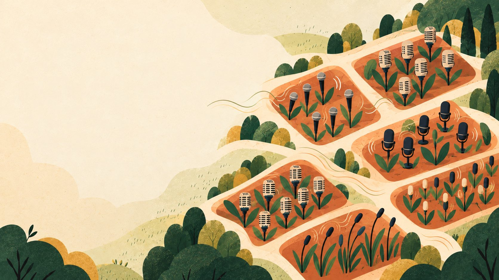

Деловойс записывает задачи с рабочих встреч
На работе люди встречаются и решают, что нужно сделать.
Деловойс слушает запись встречи и составляет список дел. В списке видно:
- что нужно сделать;
- кто это делает;
- когда дело должно быть готово.
Программа показывает, что ещё не сделано. А если нужно, можно найти слова человека, который дал задание.
Пока мы проверяем работу сервиса, кабинет бесплатный. В примере показана придуманная компания.
Как Деловойс помогает на встрече
- Записываем разговорЗапишите рабочую встречу на телефон, микрофон или прямо в кабинете.
- Получаем текстДеловойс превращает голоса в текст. Рядом со словами он указывает время, когда их сказали.
- Собираем делаПрограмма находит задания. Для каждого показывает человека и срок, если они прозвучали на встрече.
- Проверяем результатВ кабинете видно, что готово, что ещё делают и где срок уже прошёл.
При первой записи люди называют свои имена и говорят, за что отвечают. Дальше встречи проходят как обычно.
Все рабочие дела в одном месте
Деловойс не ставит галочку «Готово», если человек просто перестал говорить о деле. Если из разговора не ясно, кто отвечает или когда нужен результат, программа просит это уточнить.
- Когда нужно сделать
- Если человек сказал «завтра» или «в пятницу», программа может поставить нужную дату. Если сказали «как-нибудь скоро», точного дня нет. Его нужно уточнить.
- Вся история одного дела
- На разных встречах люди могут много раз говорить об одной задаче. Деловойс собирает эти разговоры вместе. Можно увидеть, что уже сделали и почему проблема появилась снова.
- Можно узнать, кто и что сказал
- У задачи есть фраза из встречи и время записи. Если программа не уверена, она просит руководителя проверить.
- О чём нельзя забыть
- Перед встречей видно, какие дела просрочены, что нужно закончить сегодня и какие проблемы давно не обсуждали. Можно проверить работу каждого сотрудника и отдела.
- Главное из каждой встречи Скоро в кабинете
- Не нужно перечитывать весь разговор. Деловойс покажет, о чём говорили, что решили и что нужно проверить. Можно посмотреть одну встречу или выбрать сразу несколько дней. Посмотреть пример итогов
Починить механизм у второй мачты
Что говорили об этой задаче
-
24 сентября — Дали задание.
Савва Кольцов, поручаю: восстановить ворот причальной мачты № 2. Срок — 30 сентября.
Простыми словами: Руководитель попросил Савву починить механизм до 30 сентября. В записи эти слова начинаются на 4-й минуте 12-й секунде. -
1 октября — Срок изменили.
Подшипник поставили. Проверка под нагрузкой — до 3 октября.
Простыми словами: Савва сказал, что деталь уже установили. Проверка закончится до 3 октября. В записи эти слова начинаются на 2-й минуте 18-й секунде.
Здесь видно, как менялось одно дело от встречи к встрече
Сколько стоит Деловойс
Сейчас мы проверяем сервис, поэтому кабинетом можно пользоваться бесплатно. Ниже — пример цен, которые могут появиться позже. Это пока не окончательные условия продажи.
Первый вариант
20 000 ₽в месяц. Можно обработать 20 встреч за месяц.Второй вариант
50 000 ₽в месяц. Можно обработать 70 встреч за месяц.Третий вариант
70 000 ₽в месяц. Можно обработать 100 встреч за месяц.Одна встреча длится не больше часа. Это может быть разговор на рабочем месте, совещание или обычная планёрка.
Начните с одной встречи
Создайте кабинет. Первую встречу можно записать прямо там. На регистрацию обычно уходит около двух минут.